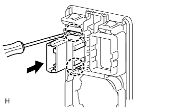

VSC OFF SWITCH > REMOVAL |
| 1. REMOVE FRONT DOOR SCUFF PLATE |
| 2. REMOVE NO. 1 INSTRUMENT PANEL UNDER COVER SUB-ASSEMBLY |
 |
Remove the 2 screws.
Detach the 3 claws.
Remove the under cover and disconnect the connectors.
| 3. REMOVE COWL SIDE TRIM BOARD |
 |
Remove the cap nut.
Detach the 2 clips and remove the trim board.
| 4. REMOVE LOWER NO. 1 INSTRUMENT PANEL FINISH PANEL |
 |
Using a screwdriver, detach the 2 claws.
Open the hole cover.
 |
Remove the 2 bolts.
Detach the 14 claws.
 |
Detach the 2 claws and remove the sensor.
 |
Detach the 2 claws and disconnect the 2 control cables.
Remove the finish panel and then disconnect the connectors.
| 5. REMOVE VSC OFF SWITCH |
Disconnect the VSC OFF switch connector.
 |
Using a screwdriver, detach the 2 claws and remove the VSC OFF switch from the lower instrument panel finish panel.